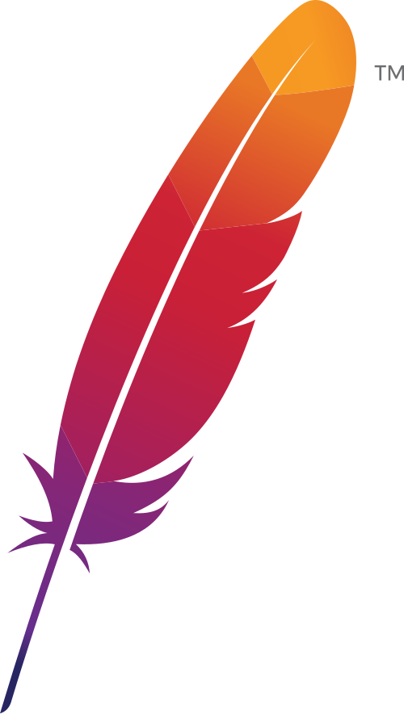
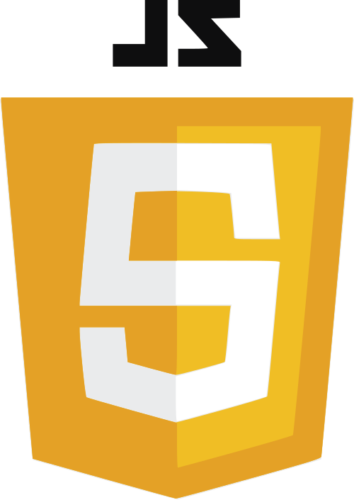
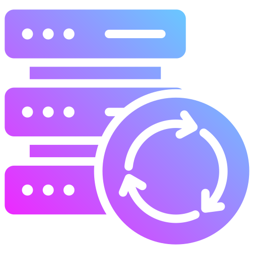

// 02 — servidores, redes & cloud
Infra & Labs

Apache & Nginx
Instalação e configuração de servidores web — virtual hosts, HTTPS e tuning básico.
Concluído
DHCP
Configuração de servidor DHCP para gerenciamento dinâmico de IPs em redes locais.
Concluído
Programação
Desenvolvimento de scripts para automação de tarefas e suporte técnico.
Em andamento
Máquinas Virtuais
Criação e gerenciamento de VMs para laboratórios de redes e testes de serviços.
Concluído
Cloud & Backup
Serviços de computação em nuvem e estratégias de backup — suporte cloud.
Em andamentoDNS & ownCloud
Resolução de nomes (DNS) e implantação do ownCloud como storage self-hosted.
Conhecimento